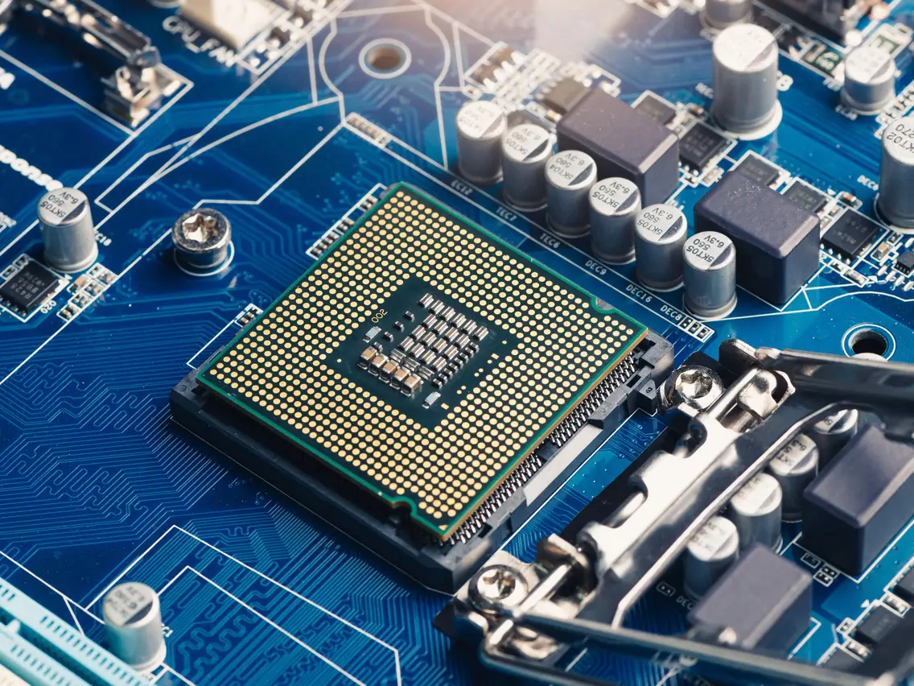

CPU (Central Processing Unit)
The Central Processing Unit, or CPU, is often referred to as the "brain" of a computer. It is a crucial component responsible for executing instructions and performing calculations that drive the overall functionality of a computer system.
Key Features:
- Processing Power: CPUs are designed to handle a wide range of tasks, from simple arithmetic operations to complex calculations required by software applications.
- Clock Speed: Measured in gigahertz (GHz), the clock speed represents the number of instructions a CPU can execute in a second. Higher clock speeds generally result in faster processing.
- Cores: Modern CPUs often have multiple cores, allowing them to handle parallel processing and execute multiple tasks simultaneously, enhancing overall performance.
- Cache: CPU cache is high-speed memory that stores frequently accessed data, reducing the time it takes for the CPU to retrieve information.
- Architecture: The architecture of a CPU, such as x86 or ARM, determines its compatibility with software and the overall performance it can achieve.
Usage:
CPU plays a vital role in various computing tasks, including running operating systems, executing software applications, and handling complex calculations in fields like graphics rendering, scientific simulations, and more.
Choosing the Right CPU:
When building or upgrading a computer, selecting the right CPU is crucial to meet specific performance requirements. Factors such as intended use, budget, and compatibility with other hardware components should be considered.
